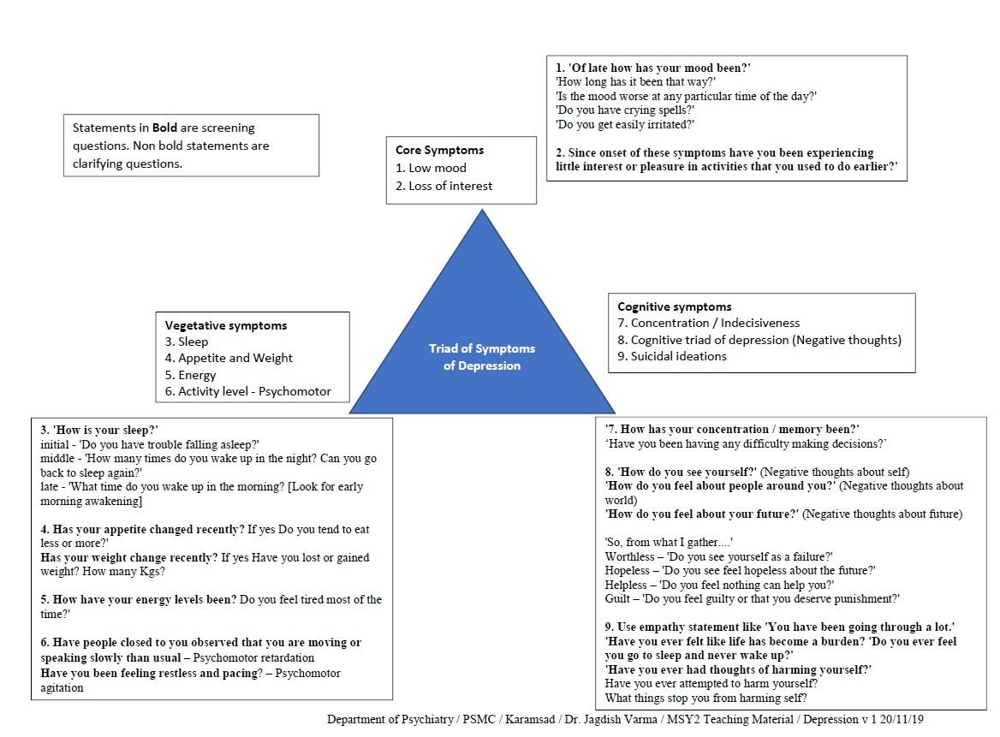

Eliciting symptoms of depression
|
Mood
|
- 'Of late how has your mood been?'
- 'How long has it been that way?'
- 'Does it remain like this most of the time of the day?'
- 'Is the mood worse at any particular time of the day?'
- 'Do you have crying spells?'
- 'Do you get easily irritated?'
|
|
Interest
|
- 'What are the things that you find enjoyable/interesting?'
- 'Have you lost enjoyment for things you used to enjoy?'
|
|
Sleep
|
- 'How is your sleep?'
- 'Do you have trouble falling asleep?'
- 'How many times do you wake up in the night? Can you go back to sleep again?'
- 'What time do you wake up in the morning?
|
|
Appetite and Weight
|
- 'How is your appetite recently? Do you tend to eat less or more?'
- 'Has your weight change recently? If yes Have you lost or gained weight? How many Kgs?'
|
|
Energy
|
- 'How have your energy levels been? Do you feel tired most of the time despite not doing anything tiresome?'
|
|
Libido
|
- I would like to ask you some sensitive questions such as sexual problems as depression may affect sexual function. Is it OK with you?
- ‘Have there been any changes in your sexual function recently?
- If yes, can you tell me more about that?
- When did it start?
|
|
Concentration
|
- 'How has your concentration / memory been?'
- ‘Have you been having any difficulty making decisions?’
|
|
Cognitive triad of depression
|
- 'How confident do you feel in yourself?'
- 'How do you feel about people around you?'
- 'How do you feel about your future?'
- Further clarification - hopeless / helpless / worthless and guilt
- 'Do you see yourself as a failure / inferior to others?'
- 'Do you see feel hopeless about the future?'
- 'Do you feel nothing can help you?'
- 'Do you feel you've done something wrong?'
- 'Do you feel guilty?
- 'Do you feel that you’ve committed a crime, or sinned greatly or deserve punishment?'
|
|
Risks
|
- 'Do you feel that life is a burden?'
- 'Do you wish that you go to sleep and never wakeup?
- 'Have you ever felt like ‘ending it all’?'
|
|
Diagnosis and Differentials
|
|

|
|
Major Depressive Episode
|
|
5 / 9 [at-least 1 core symptom] + all three D’s
DURATION = At least 2 weeks
DISTRESS = Should cause impairment in social, occupational or other areas of functioning [effect of illness on life]
DIFFERENTIALS [rule out]
- not due direct effect of a substance or another medical condition
- not better explained by schizoaffective disorder, schizophrenia, schizophreniform disorder, delusional disorder, or other specified and unspecified schizophrenia spectrum and other psychotic disorders
- no h/o manic or hypomanic episode
Subtypes of MDE
- With anxious distress - co-morbid anxiety
- With mixed features - co-morbid manic symptoms
- With catatonic features - co-morbid catatonic features described in chapter 3
- Melancholic depression - Severe loss of pleasure and loss of reactivity of mood
- Atypical depression - Mood remains reactive with reverse vegetative symptoms
- Psychotic depression - with delusions and hallucinations
- Seasonal depression - worse in winter; light therapy is effective for seasonal affective disorder
- Post partum depression - Most new mothers experience post-partum "baby blues" after childbirth, which commonly include mood swings, crying spells, anxiety and difficulty sleeping. Baby blues typically begin within the first two to three days after delivery, and may last for up to two weeks. But some new mothers experience a more severe, long-lasting form of depression known as post-partum depression. Post-partum depression may be mistaken for baby blues at first — but the signs and symptoms are more intense and last longer, and may eventually interfere with your ability to care for your baby and handle other daily tasks. Symptoms usually develop within the first few weeks after giving birth, but may begin earlier ― during pregnancy ― or later — up to a year after birth.
|
|
Persistent depressive disorder
|
- less severe depressive symptoms for 2 years, more treatment-resistant
|
|
Grief and major psychosocial stressors (adjustment disorders)
|
- Major depressive episode (MDE) can be differentiated from bereavement by the severity of symptoms (e.g., psychosis or suicidality), the presence of anhedonia (total loss of feelings of pleasure) and the duration of impairment (longer than two months). Adjustment disorders have sub-syndromal number and severity of symptoms compared to MDE. Watchful waiting may be helpful to determine whether symptoms of adjustment disorder worsen or persist into a depressive episode.
|
|
Bipolar disorder
|
- prior periods of elevated mood, increased energy, decreased need/desire to sleep, grandiosity
|
|
Anxiety disorder
|
- Depression is often secondary to, or co-morbid with, many anxiety disorders, especially generalized anxiety disorder, social anxiety disorder and panic disorder
|
|
Personality disorder (especially Cluster B)
|
- Personality disorders usually present with lifelong patterns of mood instability.
|
|
- Special types of depressive disorders
- DMDD - Disruptive mood dysregulation disorder - individual b/w 6-18yrs have significant temper outbursts out of proportion to context; at least 3 times a week for 1 year; And mood stays persistently irritable or angry most of the day
- PMDD - Premenstrual dysphoric disorder - Onset of significant mood and physical symptoms in the week prior to menstruation, and symptoms improve within a few days of onset of menstruation; symptoms must be present during at-least two cycles
|
|
|
|
|
Created with the Personal Edition of HelpNDoc: Elevate your documentation to new heights with HelpNDoc's built-in SEO